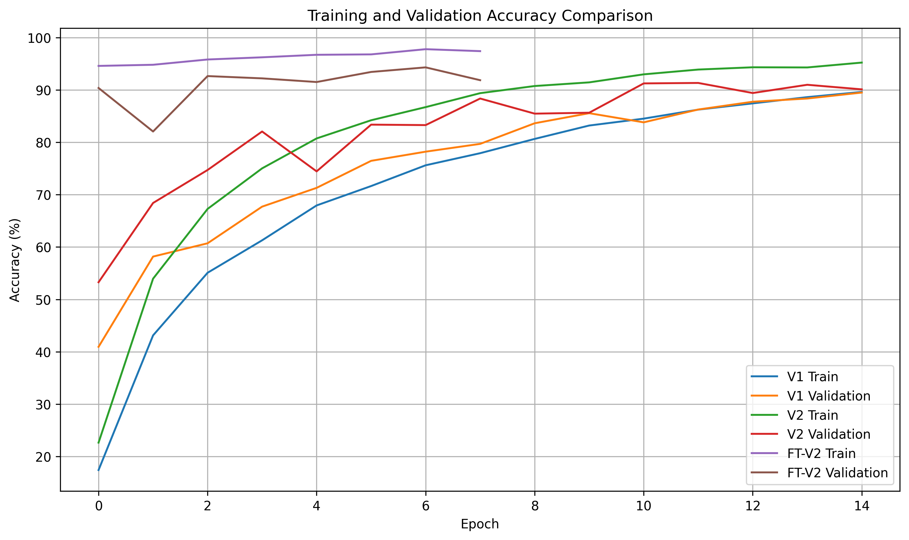
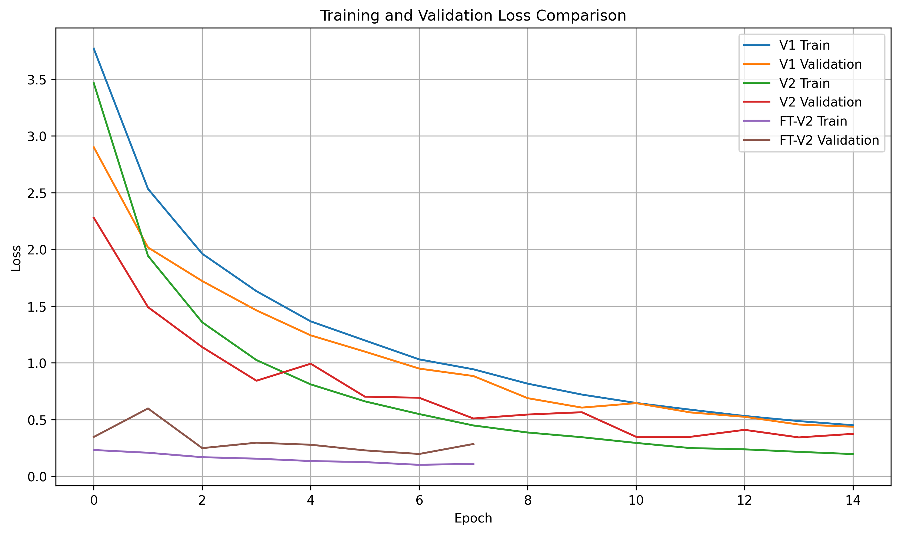
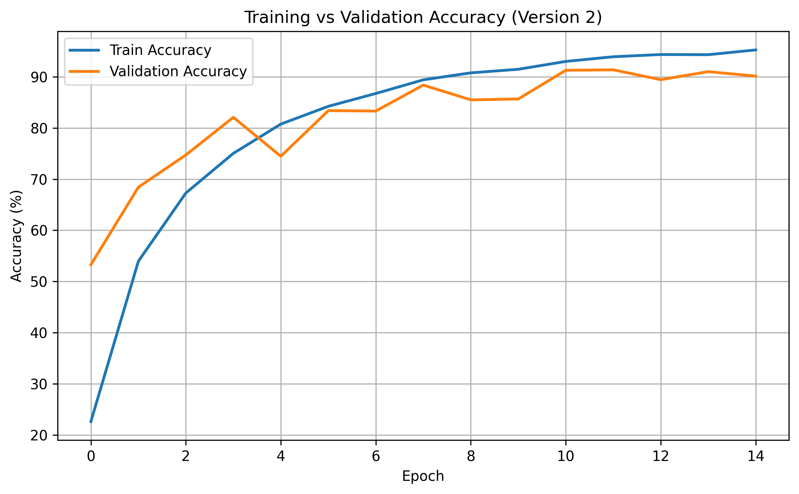
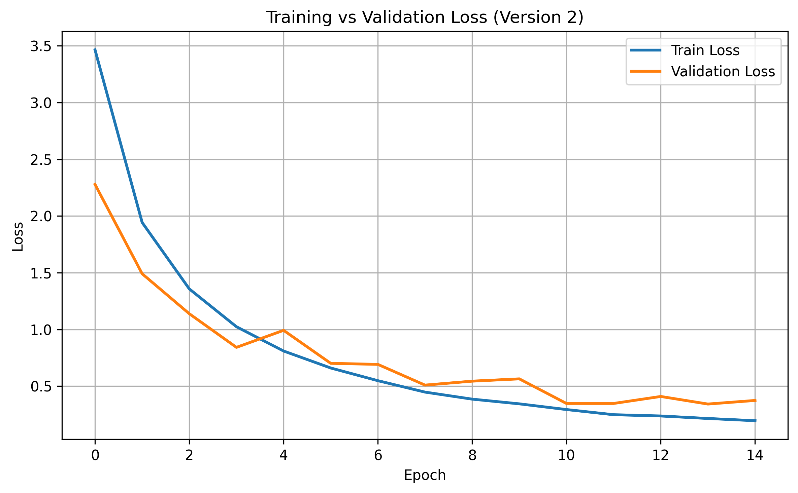
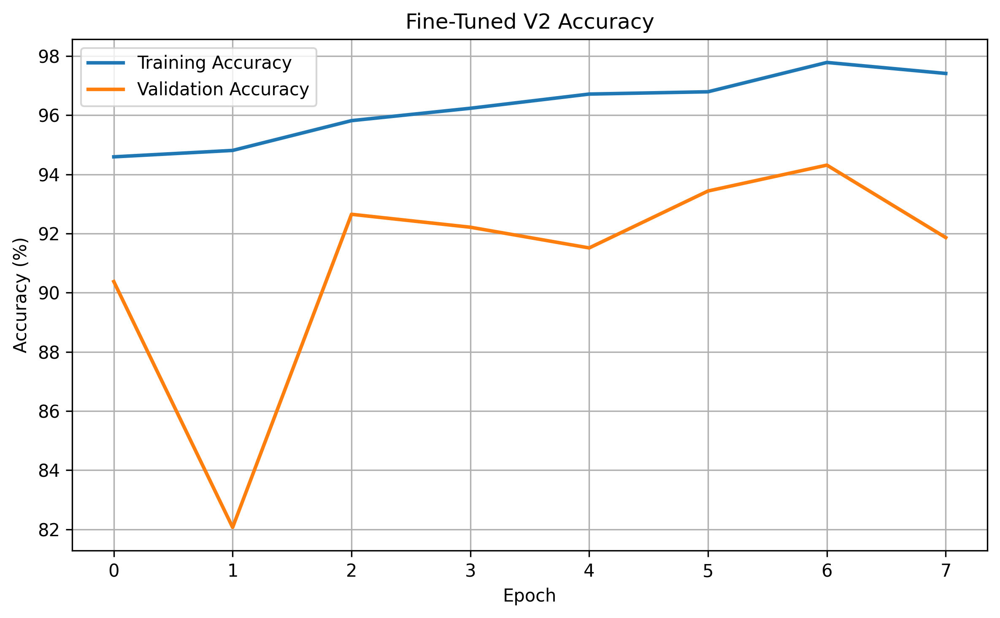
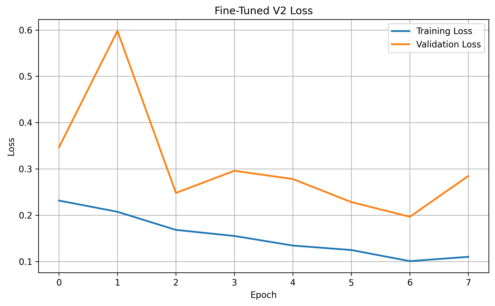
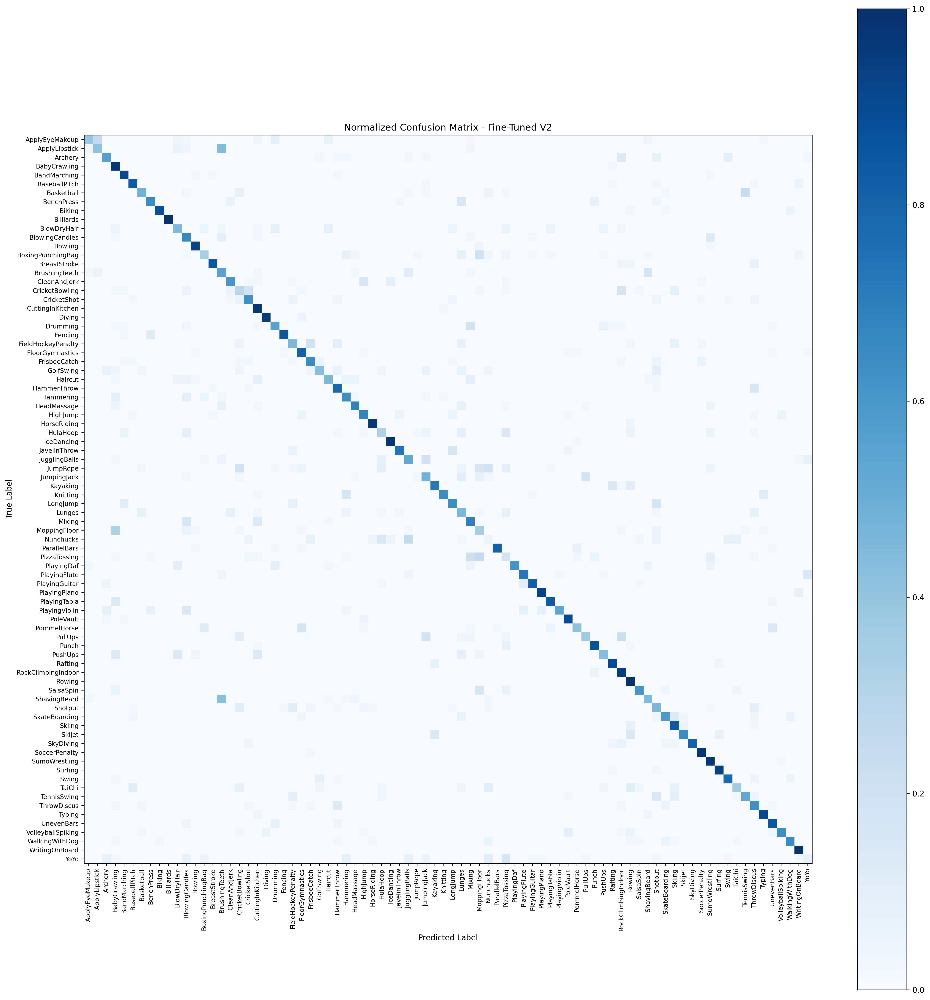

Training Progress
Learning Curves
Training and validation metrics across epochs for each model version.
Accuracy Comparison

Loss Comparison

V2 — Accuracy

V2 — Loss

V2 Fine-Tuned — Accuracy

V2 Fine-Tuned — Loss

Error Analysis
Confusion Matrices
Version 2

V2 Fine-Tuned
